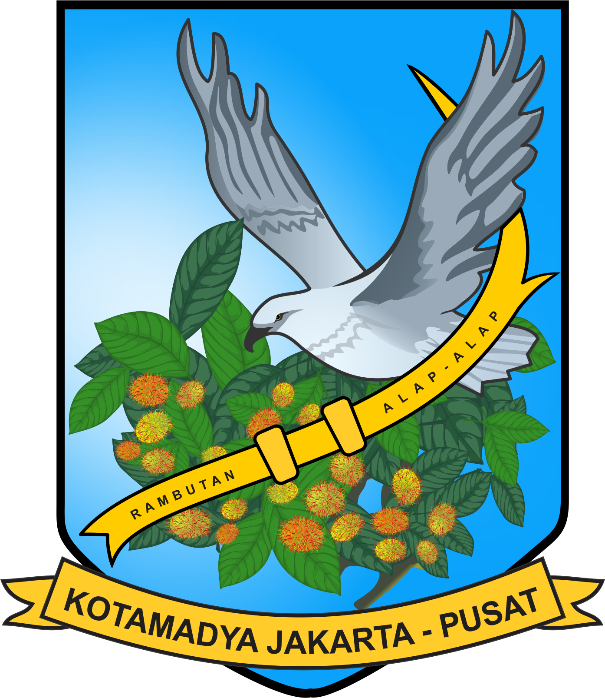
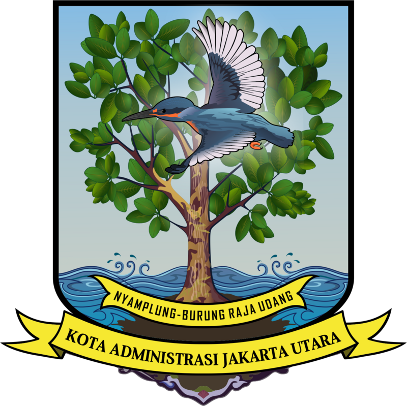
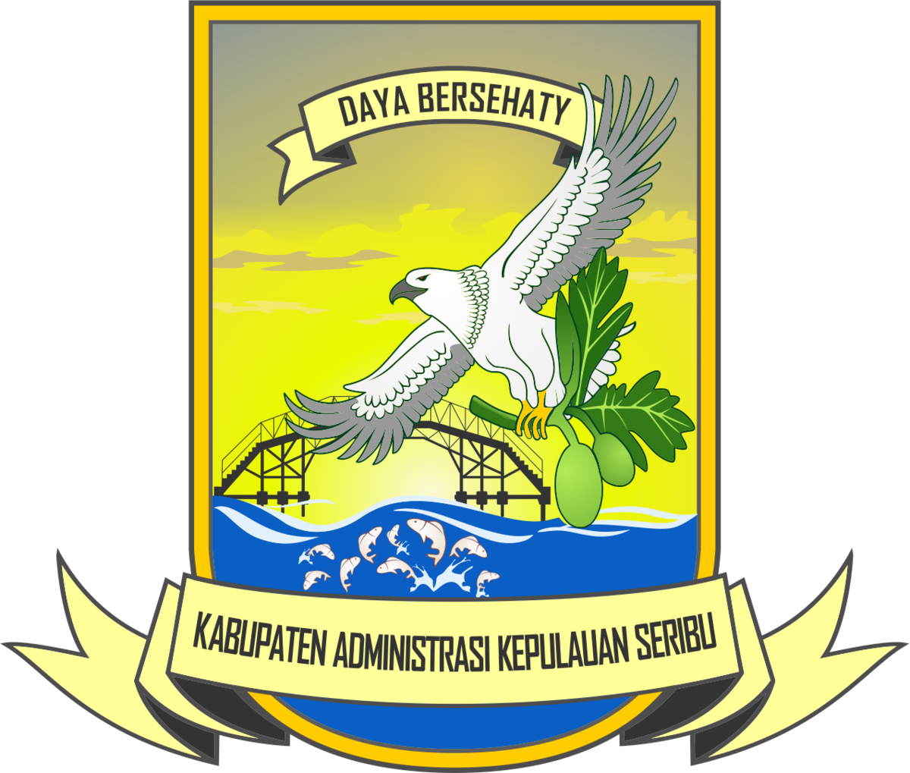

Data Kota/Kabupaten
Provinsi DKI Jakarta
Kota Jakarta Pusat
Ibukota: Menteng
Jumlah Kecamatan: 8
Jumlah Kelurahan: 44
Luas Wilayah: 47,565 km²

Kota Jakarta Utara
Ibukota: Koja
Jumlah Kecamatan: 6
Jumlah Kelurahan: 31
Luas Wilayah: 147,212 km²

Kota Jakarta Barat
Ibukota: Kembangan
Jumlah Kecamatan: 8
Jumlah Kelurahan: 56
Luas Wilayah: 125,000 km²
Kota Jakarta Selatan
Ibukota: Kebayoran Baru
Jumlah Kecamatan: 10
Jumlah Kelurahan: 65
Luas Wilayah: 144,942 km²
Kota Jakarta Timur
Ibukota: Cakung
Jumlah Kecamatan: 10
Jumlah Kelurahan: 65
Luas Wilayah: 185,538 km²
Kabupaten Kepulauan Seribu
Ibukota: Pulau Pramuka
Jumlah Kecamatan: 2
Jumlah Kelurahan: 6
Luas Wilayah: 10,725 km²
